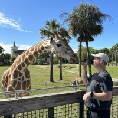
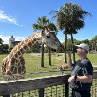
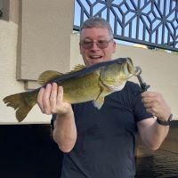
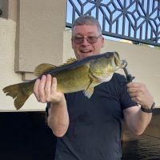

More About Me
Beginnings
Like many, I had humble beginnings and grew up in a small town with only a 4-way stop sign in the middle of town. I was in awe when I saw that our library had gotten a Macintosh computer. I remember using the mouse on the paint program. While I had already been insterested in computers, this was a huge step forward from what I had previously seen.
When I was able to, I signed up for computer programming classes in school and even some on the weekends. It was a very exciting time (in the 80's) while these were rapidly developing into something more substatial. I decided I would learn micro-computers in a business school. Shortly after enrolling and starting classes we were expecting our first child. My love of computers would have to wait.
Experience
Over the course of my working life, I've had many jobs and learned a lot of valuable lessons. I started working with a paper route before I was technically old enough to do one. You remember newspapers, right? Anyway, I dabbled with grocery store clerk for about a week and then focused on another hobbie that I enjoyed, swimming. I woudld spend every summer at the local pool so, naturally, I became a lifeguard. So far, this was while I was still in high school. Fast forward to married life and I've worked in a clay facility making product, testing product, and even coordinating shipments before moving South. After the move, I worked in landscaping at a nursery, and also managed a shoe store in the mall. My first "career" type job was estimating for a cultured marble company. I honed my skills with sales, estimating, and also office management. In that company I worked my way to co-owner. After that, I assisted several friends with their buisinesses before moving into construction project management. I've worked for a few companies over the years but have mainly stuck with this career since my organizational mindset seeems to be made for it.
Aspirations
During the pandemic, I couldn't help but think how much easier it would be if I could work Form home on a more permanent basis. I thought about that love I had for computers and started to search for carreer options in computers that would eventually generate a simalar salary that I had now grown accustom to. I am now several months into my coding journey and each milestone gives me inner satisfaction that I'm making progress toward my goal of becoming a full-stack engineer.
Gallery
These photos were taken over the last few years. Some are simple selfies, while others offer glimpse into my love for nature and spending time with my family. As a family we are very private so you'll just have to imagine them on the other side of the camera. The lst few pictures were taken with Disney's photo lens while we toured the parks.
 

 
